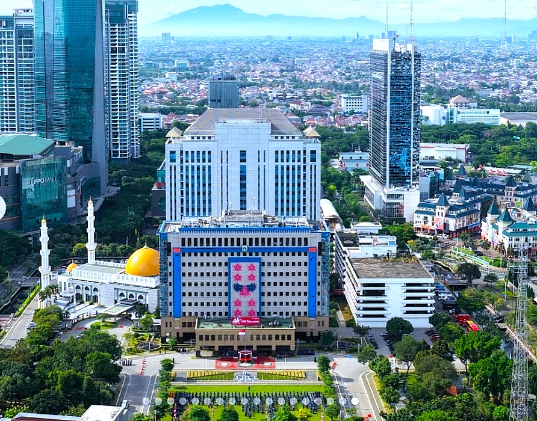
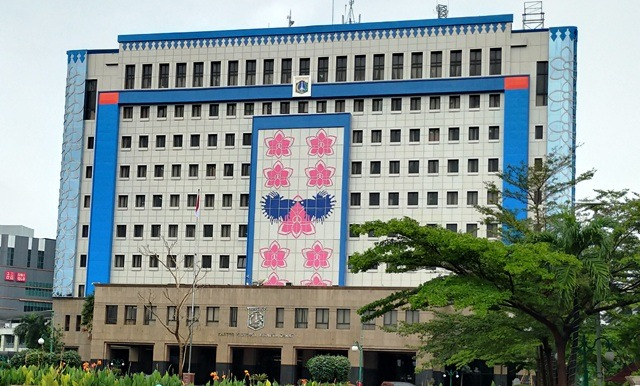
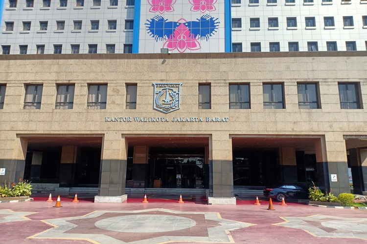

Suban Kesbangpol Kota Administrasi Jakarta Barat

Total Forum & Organisasi
Partai & Ormas
Zona Rawan
Orang Asing

Badan Kesatuan Bangsa dan Politik mempunyai tugas menyelenggarakan urusan pemerintahan bidang kesatuan bangsa dan politik.
Penguatan nilai Pancasila dan pendidikan politik bagi masyarakat demi demokrasi yang sehat.
Menjaga stabilitas ekonomi, sosial, dan budaya dari berbagai potensi ancaman dan gangguan.
Meningkatkan deteksi dini dan pencegahan konflik sosial di tengah masyarakat perkotaan.
Data kepengurusan dan keanggotaan forum serta organisasi binaan Suban Kesbangpol Jakarta Barat.
PERIODE: 2025 - 2030 | 17 Anggota Terdaftar
| No | Wilayah | Status Kesiapan | Update Terakhir |
|---|---|---|---|
| 1 | Cengkareng | Stabil | 10 menit yang lalu |
| 2 | Grogol Petamburan | Stabil | 25 menit yang lalu |
| 3 | Kebon Jeruk | Monitoring | 1 jam yang lalu |
Jl. Kembangan Raya No.2 (Kantor Walikota Jakarta Barat, Blok B, Lt.13)
